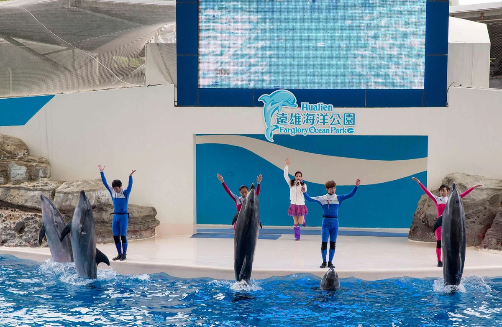

원슝 해양공원(Farglory) 입장권, 놀고 나서 화롄 시내에선 뭘 먹을까?
바다 보이는 언덕 위 해양 테마파크에 가기 전에, 운영 시간과 가는 법, 화롄 시내 맛집을 챙겨보세요.
게시
원슝 해양공원(遠雄海洋公園)은 화롄 서우펑향(壽豐鄉) 바닷가 언덕에 있는 해양 테마파크예요. 근처에는 지도에 등록된 식당이 없어서, 놀고 나서 화롄 시내로 돌아와 먹는 동선을 정리했어요. 遠雄海洋公園 공식 사이트를 바탕으로 2026년 10월 기준으로 정리했어요.
01 · 원슝 해양공원은 어떤 곳일까
여덟 개 테마 구역과 네 가지 쇼가 있는 해양 테마파크예요. 주소는 花蓮縣 壽豐鄉 鹽寮村 福德 189호예요. 공원 안에 테마 레스토랑 세 곳과 19세기 영국 부두풍 쇼핑거리도 있어요.

02 · 꼭 볼 것
돌고래 쇼 공원 대표 쇼예요.
바다사자 쇼 바다사자 순찰대(海獅巡邏隊) 쇼예요.
海洋探索館 해양 생물을 가까이에서 보는 전시관이에요.
奇妙海洋慶典 수정궁에서 열리는 쇼예요.
03 · 가는 법
버스 화롄역에서 1140·1145번 버스를 타고 海洋公園 정류장에서 내려요. 약 35분, 약 NT$51이에요.
택시 화롄역에서 약 25분, 약 NT$400이에요.
차로 台9線으로 花蓮大橋를 건넌 뒤 台11線을 따라가요.
04 · 운영 시간과 요금 (2026년 10월 기준)
| 내용 | |
|---|---|
| 운영 시간 | 09:30~17:00 |
| 여름 성수기 | 평일 09:30~17:30, 주말 09:00~17:30 |
| 입장 마감 | 폐장 2시간 전 매표·입장 마감 |
05 · 놀고 나서 들르기 좋은 화롄 시내 맛집
공원 근처에는 지도에 등록된 식당이 없어요. 아래는 공원에서 약 7.5~8km 떨어진 화롄 시내 맛집이에요. 아래 거리는 지도에 등록된 좌표로 잰 직선거리라 실제 이동 거리는 더 길 수 있어요.
利普咖啡商行 · 카페 · 북쪽 약 7.5km 지도에 카페(으)로 등록된 곳이에요.
Yuli Qiaotou Stinky Tofu (玉里橋頭臭豆腐-花蓮店) · 취두부 · 북쪽 약 7.5km 지도 메모: 동대문 야시장 구경 전후로 편하게 들르기 좋은 근처 식당이에요.
Mi Dang Thai Barbeque · 태국 · 북쪽 약 7.6km 지도에 태국(으)로 등록된 곳이에요.
巷往 Hualien · 우육면 · 북쪽 약 7.8km 지도 메모: 동대문 야시장 구경 전후로 편하게 들르기 좋은 근처 식당이에요.
凍涼小舖 · 빙수 · 북쪽 약 7.9km 지도 메모: 동대문 야시장 구경 전후로 편하게 들르기 좋은 근처 식당이에요.
蜜斯蜜複合式餐廳 · 파스타 · 북쪽 약 7.9km 지도에 파스타(으)로 등록된 곳이에요.
가게마다 쉬는 날과 영업시간이 다르니 방문 전 구글맵에 등록된 영업시간을 확인하세요.
지도에서 화롄 맛집도 확인해보세요
공원 일정 앞뒤로 들를 화롄 맛집을 지도에서 함께 찜해두세요.